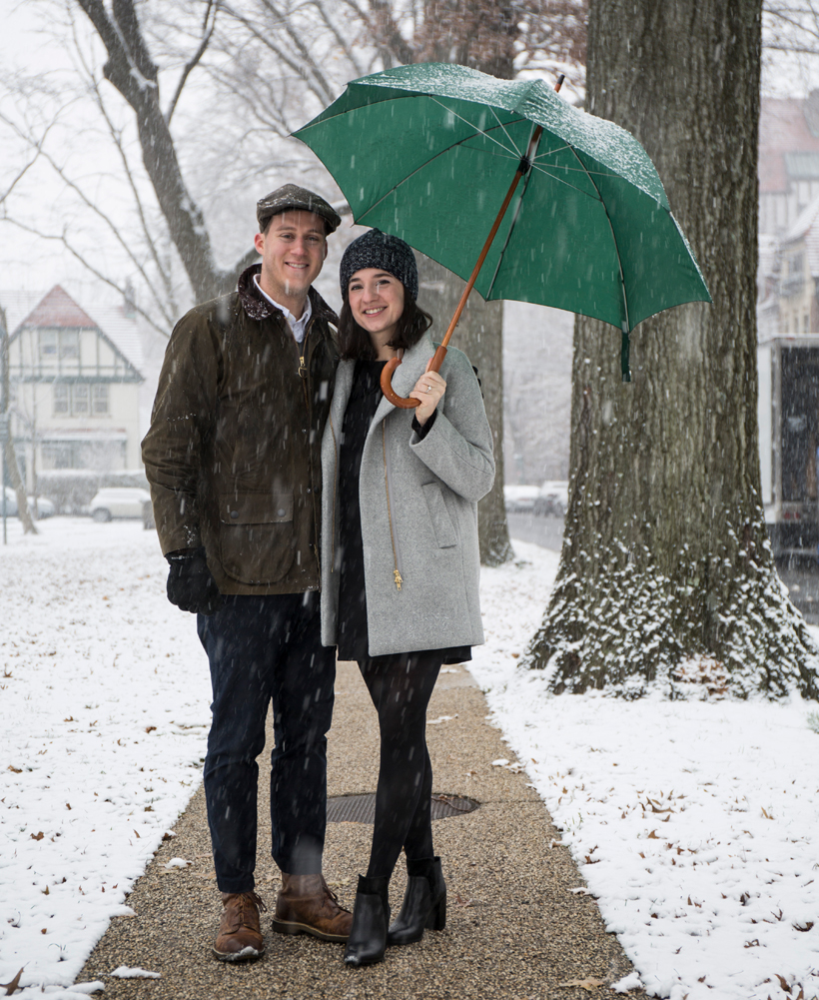
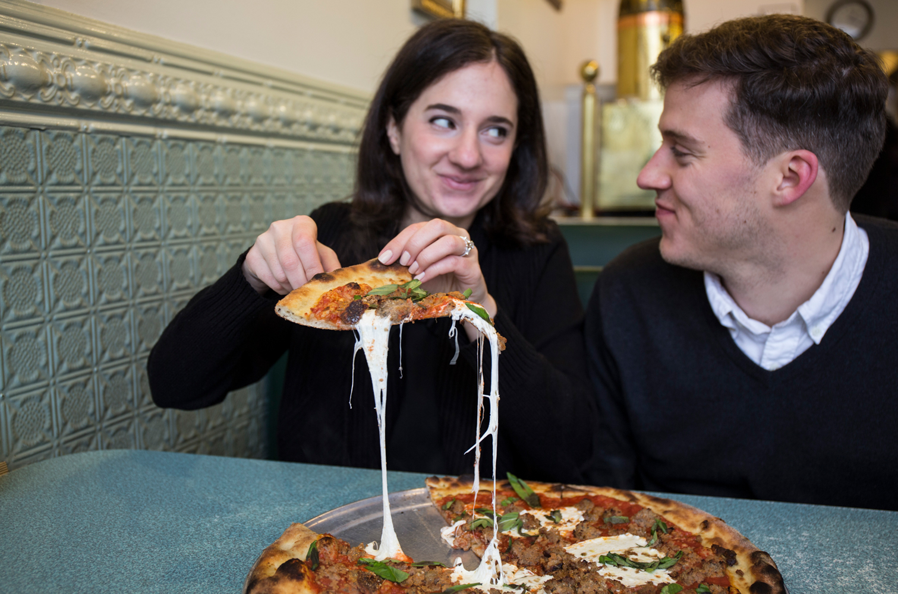
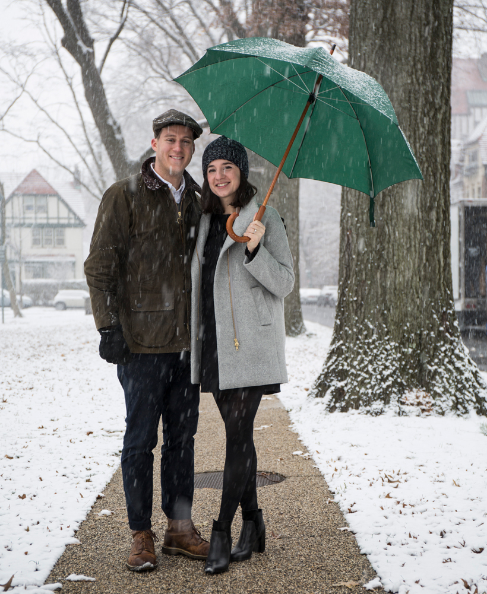
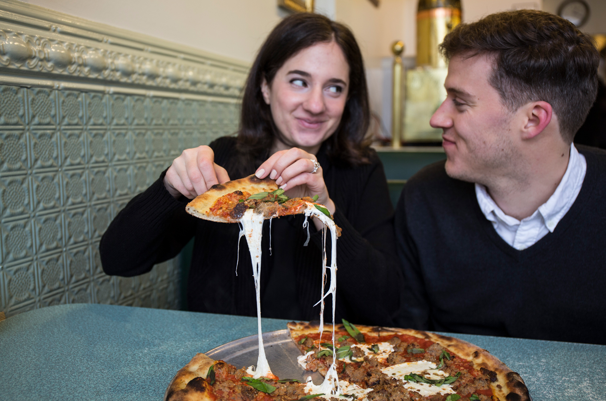

Hello Hancocks
About the bride & groom
It was over ten years ago that Tyler and Sarah went on their very first date after meeting through friends at Garden City High School. Sarah, a ruthless fifteen year old, then immediately broke up with Tyler - a choice that Tyler will not let her forget.
High school, college, and first jobs rambled on, until seven years later when luck was decidedly on Sarah’s side. Luck (also known as the Long Island Railroad) brought them back into each others' lives. It was four years ago that the soon-to-be newlyweds met once again on the fateful 5:33pm from Penn Station to Merillon Avenue, and rekindled their friendship, which quickly turned to love.
As their love story continued, it was all but evident that it was based loosely off of the 1987 classic, Planes, Trains, and Automobiles. Sarah and Tyler spent over a year dating long distance between Long Island and Cape May. Sarah took up a hobby of riding the New Jersey Transit bus to Atlantic City to meet her beau on weekends, and Tyler spent many long car rides back and forth, back and forth, occasionally leaving his house keys (and always his heart) behind in New York. Over time the distance shortened - from Sarah’s Brooklyn apartment to Tyler’s home on Long Island, from one side of Nassau Boulevard to the other, until Tyler and Sarah finally found their home together in Forest Hills.
Daisy, for one, misses the car rides.
Cape May, the place where their love grew during that first year, would eventually be the place Tyler asked Sarah to be his wife. The rest, as they say, is history.
With endless love and gratitude, we are delighted to share this newest chapter of our history with you, continuing our story as husband and wife.
Our Wedding
Saturday, November 10, 2018
4 O'Clock in the Evening
Village Club at Sands Point
1 Thayer Lane
Sands Point, New York 11050
Black Tie Optional
(but encouraged)
The Village Club of Sands Point was once the estate of Isaac Guggenheim. Construction of the manor house was started by Guggenheim in 1916 and was completed in 1918.
The estate and its surrounding land was developed in the formal style of the Italian Renaissance, and its 210 acres face Hempstead Harbor, an inlet of the Long Island Sound. There is a clear view of the New York skyline on a fair weather day.
During the summer, Guggenheim would commute to his New York office on his smaller yacht, a 125' boat, which had a crew of six. (His larger yacht had a crew of forty and was used principally for cruises in European waters, as one does.)
Mr. Hancock and Ms. Cordell similarly commute to New York via the Metropolitan Transit Authority’s F train, with a crew of fellow Queens residents and the occasional bum.
There are many fascinating details about the manor house both in its design and the materials used in the construction, much to the delight of Best Man, J.R. (an architect), and Father of the Bride, Donald (a carpenter and all-around Renaissance man).
Additional Information
Our Registry
Nearby Accommodations
Knickerbocker Yacht Hotel
433 Main Street
Port Washington, NY 11050
Hilton Garden Inn Roslyn
3 Harbor Park Drive
Port Washington, NY 11050
The Roslyn Hotel
1221 Old Northern Boulevard
Roslyn, NY, 11576
 


